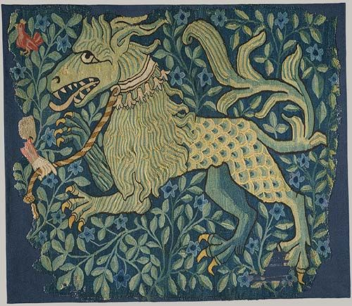
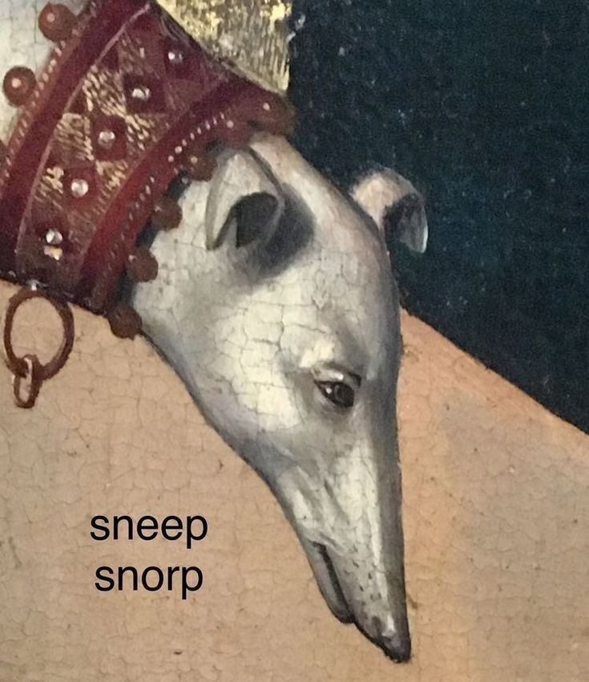
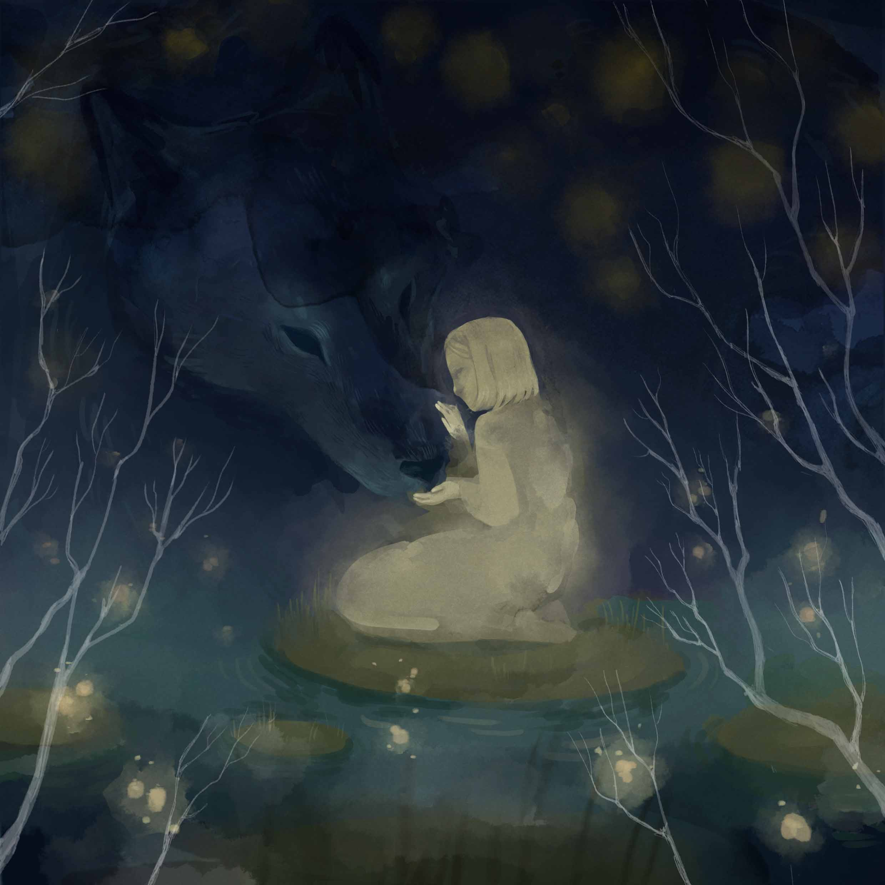
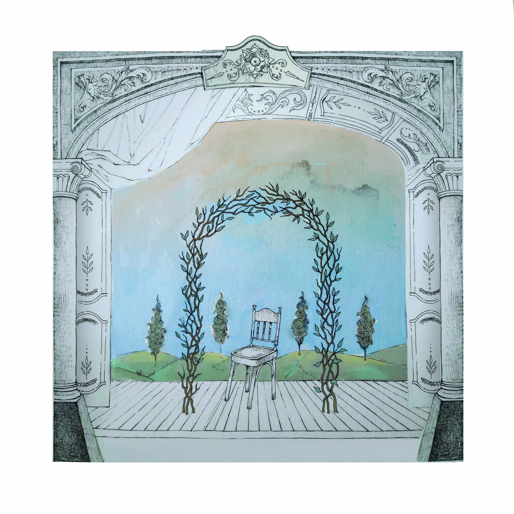
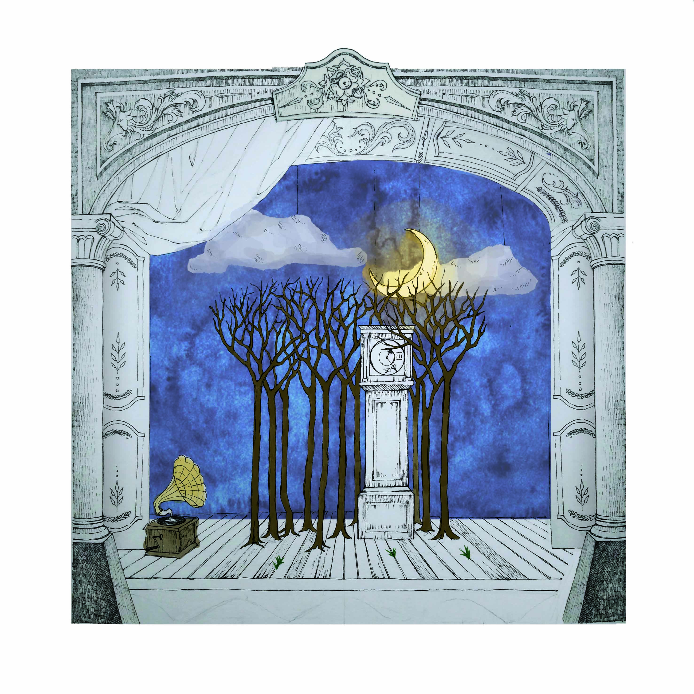
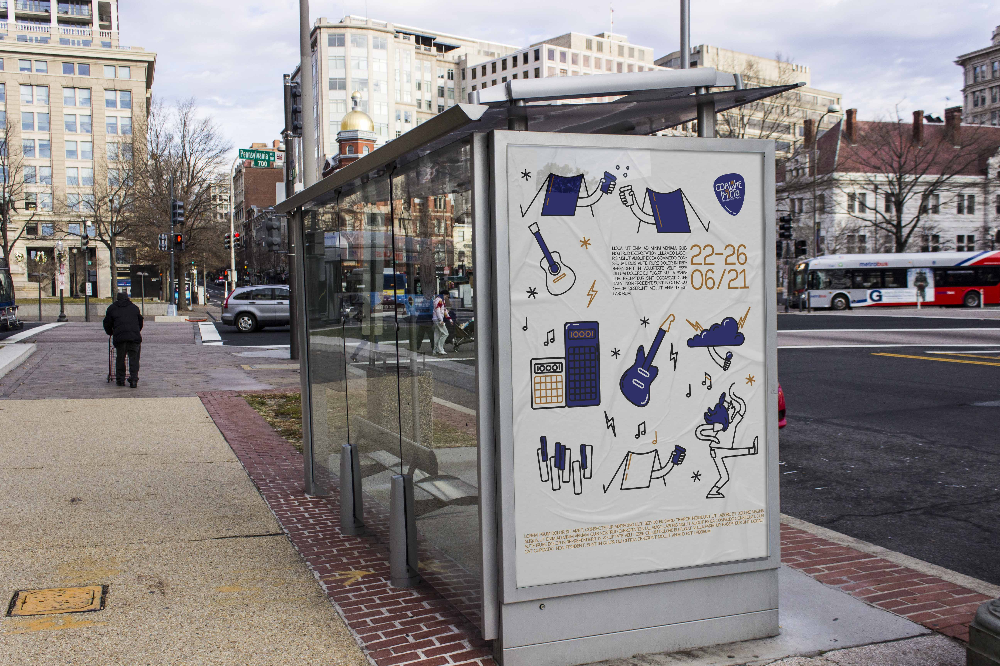
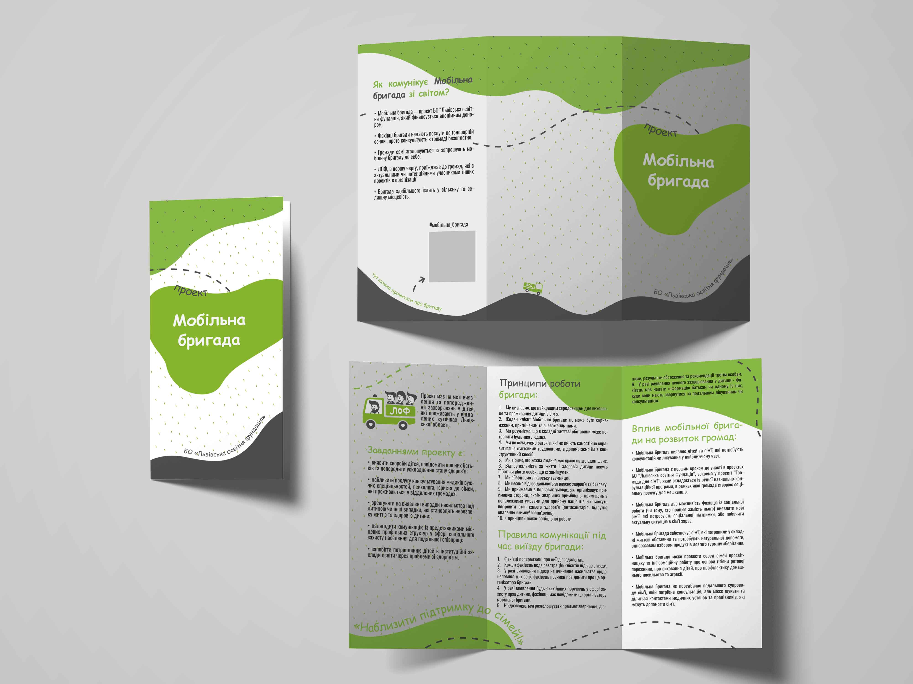
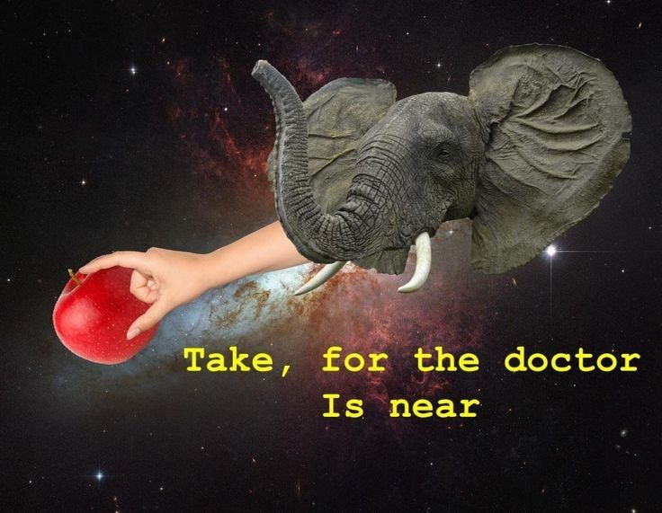

Мене звати Уляна. Розказувати про себе - не моя сильна сторона, тому в реальному житті я б зупинилась на цьому. Але чула, що в інтернетику, на всяких сумнівних сайтах, можна поводитись не так, як в реальному житті, тому пристебніть свої паски безпеки в Інтернеті і поїхали.
Коротенький список речей, які мені подобаються:
Отакі:

І такі:

*сніп-снорп*
Можете знайти мене в Інстаграмі, клікнувши сюди.
Будь ласка, заходьте, не соромтесь, ставте дизлайки, видаляйте коментарі))
Тепер, коли ми вже трохи познайомились, я можу показати вам деякі роботи з портфоліо, прикріпивши посилання на Біхенс. Але не буду, бо такого посилання не існує в природі. Бачите, за 18 років характеристика персонажа "Скритність" - прокачалась до 80-го левела і створення публічної сторінки для творчості, яку можуть побачити чужі люди, перетворилось на завдання з поміткою "підвищений рівень складності".
Але на своєму першому веб-сайті треба дивувати.
Ну.. таки розмістити хоч якісь роботи, бо якщо лишити тут тільки цей дивний текст, відвідувач може почуватись, ніби всі 13 секунд, проведені тут, його намагались розіграти.
Але не смішно.
То найчастіше я малюю ілюстрації
 
Ілюстрація для пісні "Хто Вона?" - Вежа Хмар - Її чотири обличчя (1999р.)
Ілюстрація з серії "Про Бет і Еліс"
 
"Театр"
Крім малювання в фотошопі, моє хобі - розміщувати свої дизайни на мокапах.
 
Здається, на цьому місці, для відвідувачів мого першого веб-сайту, я вже як відкрита книжка.
Що ще такого можу розказати про себе?.. Захоплююсь мемами про сир...

(То не мем про сир)
А якщо говорити серйозно, то звук труби, під який з'являється двоголовий дракон у пісні Fleet Foxes "An Argument" - це вичерпний опис мене, як особистості. До такого висновку людина має дійти після років близької дружби, коли б ми вже добре знали одне одного.
Однак вам пощастило щойно зекономити ці роки, просто переглянувши даний сайт!
Дякую, що дочитали до цього моменту. Гарного дня, пане Роман!
А якщо ви дійшли аж сюди і ви не пан Роман, то я бачу вам по приколу переходити за посиланнями, які скидають в загальний чатик малознайомі люди і пебувати на всяких незрозумілих сайтах, круто.
(але не переживайте, тепер ви вже все, що можна було, про мене дізнались, то ми майже як сім'я)
Впевніться, що на вашому ноуті хороший антивірусний захист і робіть все, що захочеться) Гарного дня вам теж!